처음 온 사용자가 핵심 행동과 대표 추천 콘텐츠를 보는 화면
- Shell
- 4-tab · 홈
- Overflow
- OK
- Internal
- 0
- Flow suffix
- 0
FlowMe P4 Scenario Screenshots
route별 첫 화면이 아니라 사용자가 실제로 들어오고, 저장하고, My Flow와 Calendar에서 실행하는 흐름을 모바일 390px 기준으로 이어서 캡처했습니다.
처음 온 사용자가 핵심 행동과 대표 추천 콘텐츠를 보는 화면

홈 CTA 이후 통합 콘텐츠 목록 상단

카드의 제목, 결과 약속, 먼저 할 일, CTA를 확인

입력, 저장 결과, 먼저 할 일이 한 화면에 보이는지 확인
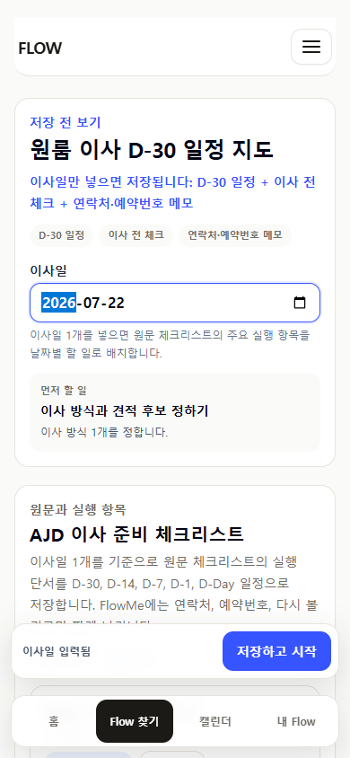
날짜 입력 후 저장 CTA와 결과 예측이 유지되는지 확인

저장 완료보다 첫 실행 항목이 먼저 보이는지 확인
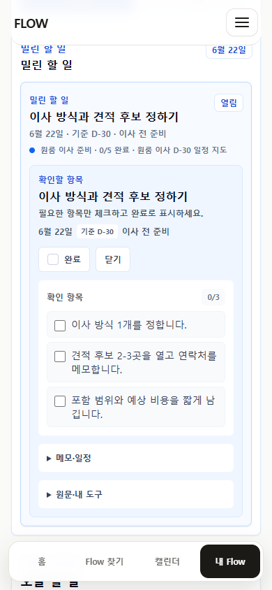
체크 항목과 상세/메모가 과하게 노출되지 않는지 확인
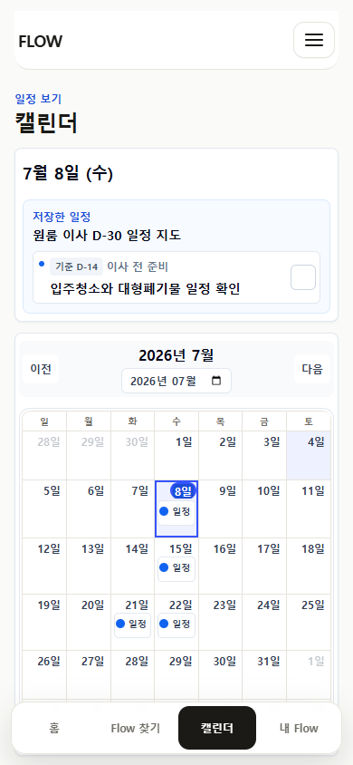
가장 가까운 일정 agenda가 먼저 보이는지 확인
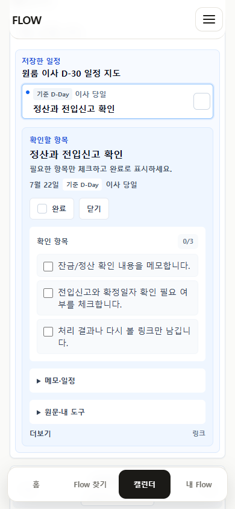
월간 달력에서 다른 저장 일정으로 이동했을 때 agenda가 이해되는지 확인

공유 shell과 저장 CTA가 주 행동으로 보이는지 확인
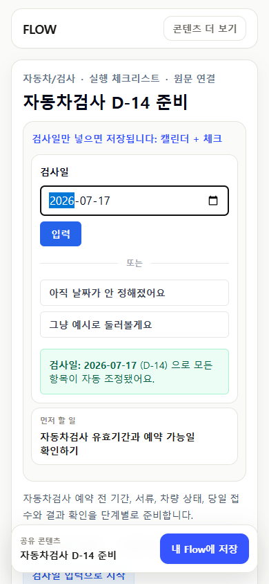
입력 UI가 한 곳의 주 입력으로 보이는지 확인
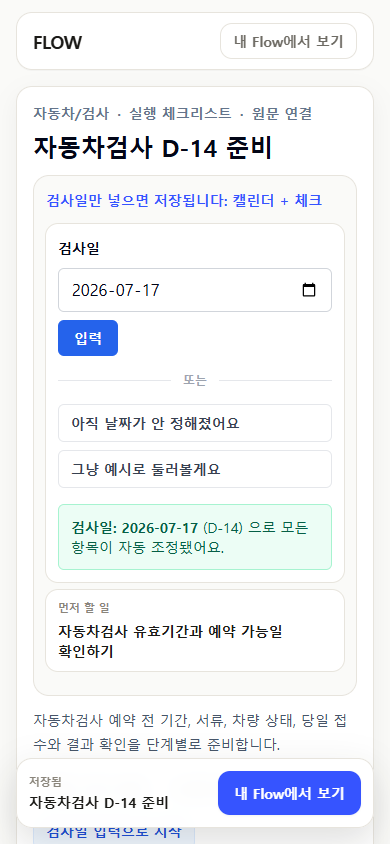
저장 후 같은 공유 화면에서 다음 이동이 명확한지 확인
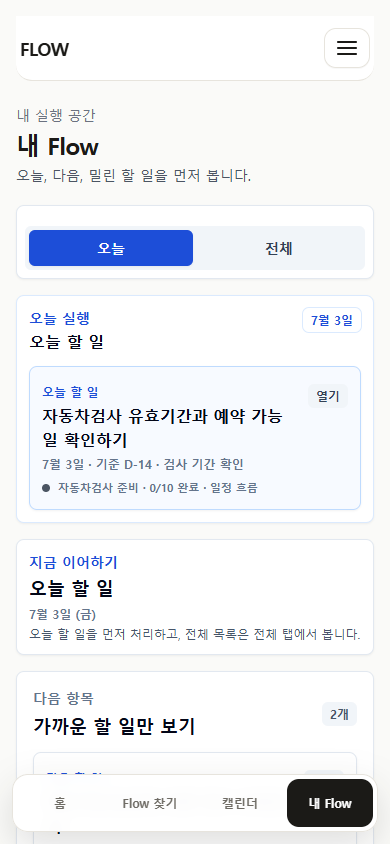
공유 shell에서 앱 shell 실행 허브로 이어지는지 확인

기준일 없이도 저장할 콘텐츠와 첫 행동을 이해할 수 있는지 확인
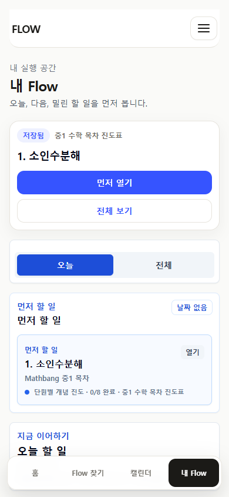
빈 상태 대신 첫 실행 항목이 보이는지 확인
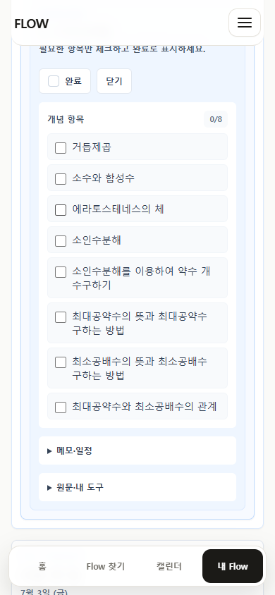
진도/체크 실행 구조가 바로 보이는지 확인
방금 저장한 콘텐츠의 첫 실행 항목과 기존 저장 항목이 충돌하지 않는지 확인
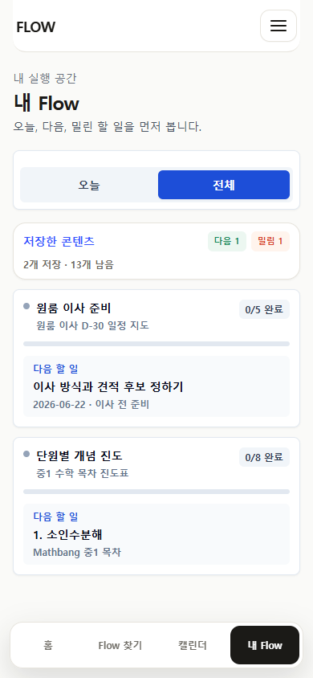
반복 사용자가 저장 콘텐츠와 다음 할 일을 빠르게 구분하는지 확인
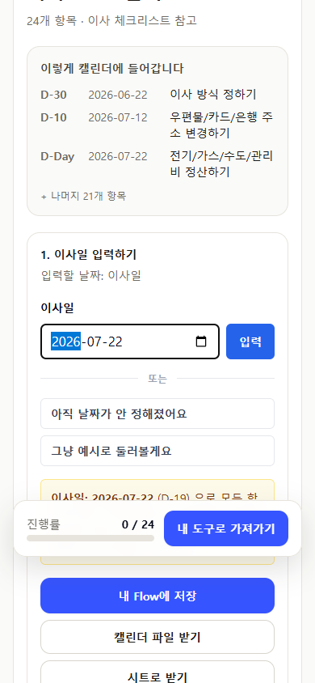
이사일 입력 후 캘린더/시트 결과를 예측할 수 있는지 확인
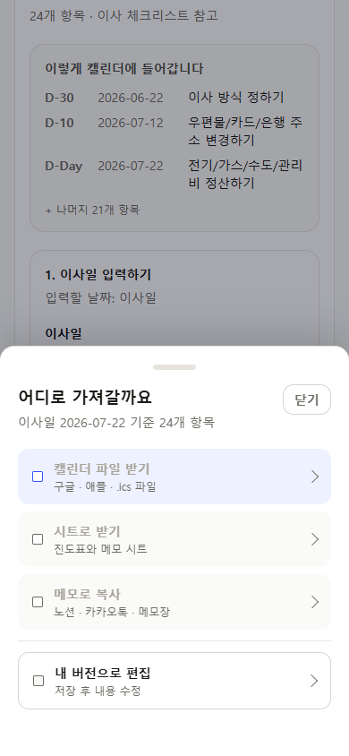
캘린더 파일/시트/메모 결과 라벨이 예측 가능한지 확인
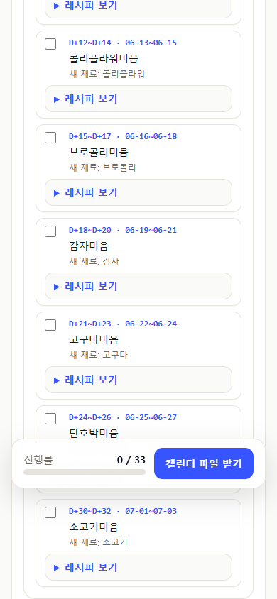
시작일 기준 식단표와 원문 기준이 보조 정보로 정리되는지 확인
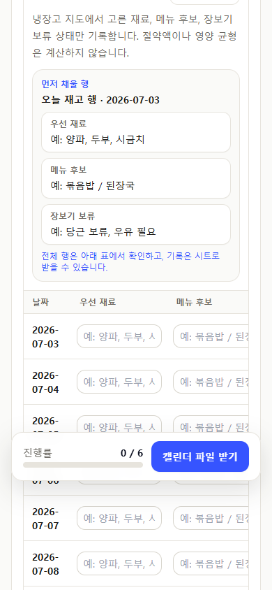
sheet형 실행 화면이 주요 카드 톤과 맞는지 확인
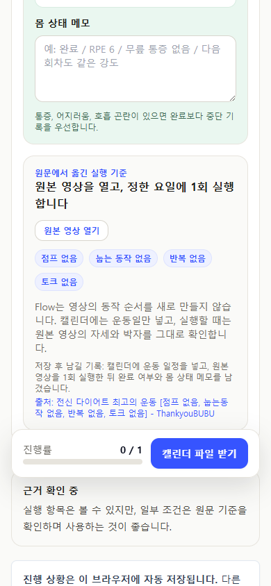
영상 근거와 실행 결과 카드가 조용한 보조 위계인지 확인
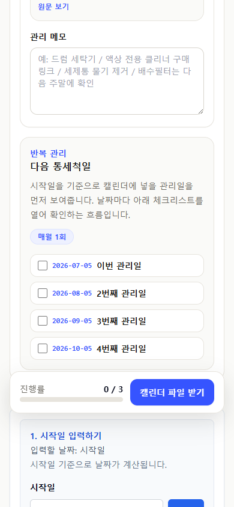
관리 루틴 카드와 source bridge visual polish를 확인